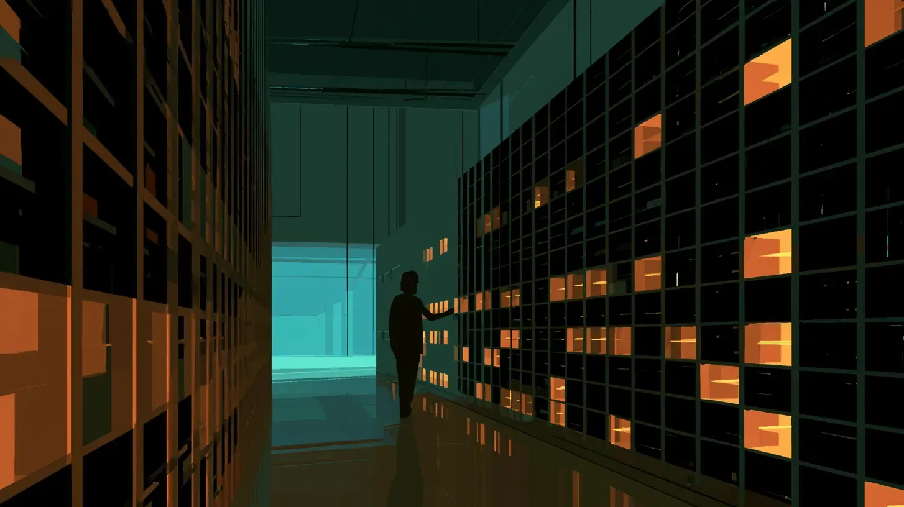

Two serious bodies of evidence give opposite answers. This exhibit shows that both can be right at once, and lets you find the conditions under which each one holds.
Average residential rates in the average state, 2019 to 2024, compared with what they would have been without the data centers built in that period. REPORTED
Added to what other PJM customers pay across three capacity auctions because of data center load, per the grid's independent market monitor. FACT
Both numbers are real. They come from different years, different places and different mechanisms. The rest of this page takes them apart.
PJM runs the grid for 13 states and Washington, DC. Every year it holds an auction that pays power plants to be available on the hottest and coldest days. The price is set in dollars per megawatt per day. Tap a year for its price.
The 2025/26 auction cost PJM customers $14.7 billion, up from $2.2 billion. Two expert analyses each asked what the bill would have been without one driver. Switch each driver on to stack its claimed share against the actual total.
INFERENCE When drivers interact, a scarce grid makes each one more expensive than it would be alone. Each side can then credibly blame the driver it prefers. The useful question is which drivers policy can change, not which one is "the" cause.
For a typical DC household, the capacity line on the bill went from about $3 a month to about $13 when the 2025/26 auction took effect in June 2025 REPORTED. Move the slider to the share of that $10 increase you attribute to data centers. The marks show where each source lands.
Drag through the years. Each bar is the span of data a source can see. The shaded band is when the new PJM capacity prices are on household bills.
| Source | Covers | Finding | Label |
|---|---|---|---|
| Watten, Bistline, Blanford (EPRI) | 2015–2024, states | Doubling data center capacity lowers residential prices about 3.5% (95% range −12.1% to −1.4%). Authors warn supply limits or unrealized demand could reverse it. | REPORTED |
| Garimella (Rutgers) | 2014–2024, 24 states | Bill effects from −$2.00 to +$2.09 a month on a $164 average bill; none robustly significant. Title: "Mostly not. Yet." | REPORTED |
| LBNL and Brattle, 2026 edition | 2019–2025, states | Highest load growth states saw all-sector real prices fall over 1¢/kWh; the residential link is weaker. Capacity added 0.9¢/kWh to PJM wholesale costs in 2025. | FACT |
| Monitoring Analytics (IMM) | Auctions for 2025/26–2027/28 | Data center load added $9.33B, $7.27B and $6.50B to the three auctions; 39.6% of 2027/28 revenue. | FACT |
The researchers on both sides name the same three conditions in their own caveats. Set each one for the place you care about.

The fight crosses party lines. The Ratepayer Protection Act, pushed by Sen. Jon Husted (R-Ohio), passed the House 417 to 3. Sen. Martin Heinrich (D-N.M.) blocked fast Senate passage because the bill relies on voluntary state commitments, and he wants operators required to pay their energy costs REPORTED. Candidates in both parties are running against data centers this fall REPORTED.
We did not prove that data centers raised or lowered any specific household's bill. The capacity figures describe PJM, which covers about a fifth of the country. Hedged load does not pay auction prices directly, so the auction total is not the same as what customers paid. Exhibit C's split is our arithmetic on two published figures. This page leaves out water, land, local tax revenue and jobs, which drive much of the opposition; The Data Center Bill covers the tax side for Georgia.
What would change this read: household-level studies covering 2025 and 2026; utility filings that split capacity costs by cause; large-load tariffs that show whether data centers end up paying their own grid costs.
This exhibit gives S2·07 its first federal data point and tests its projection that buildout costs default to all customers. It also updates the premise that almost nobody is voting on the plant: on 3 November, data centers are a campaign issue in Ohio, Texas and Pennsylvania. INFERENCE